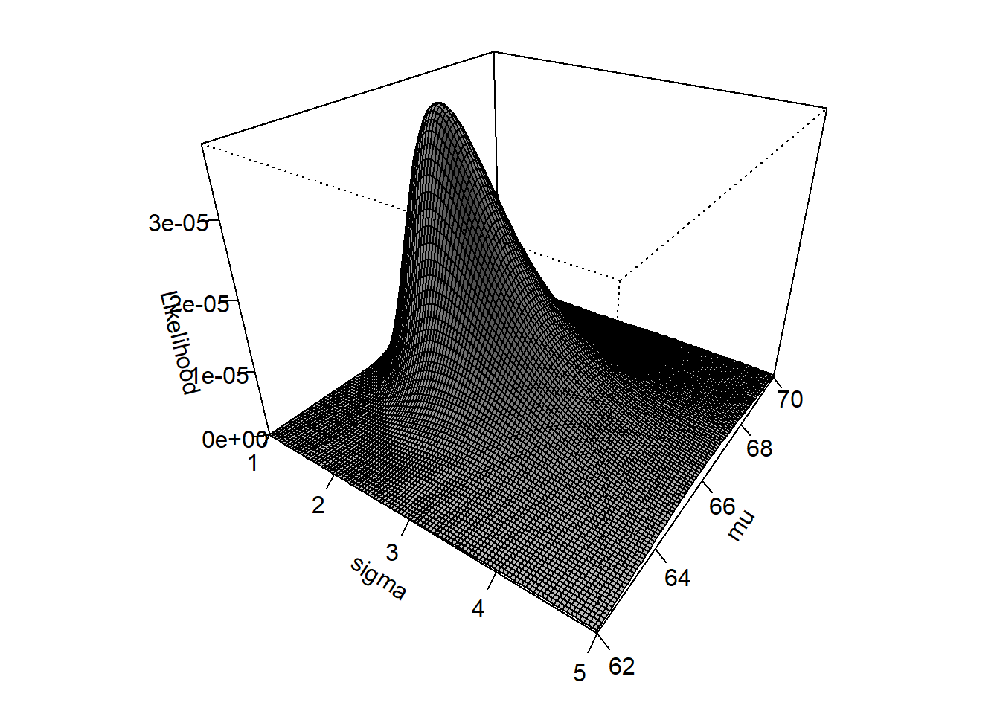
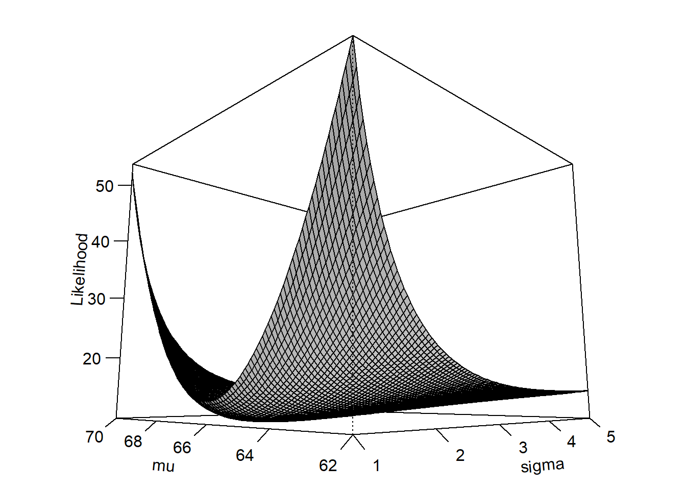

a <- c(63.6, 66.5, 64.2, 67.6, 68.3)
mean(a)[1] 66.04If you’ve every right-clicked on a figure in Excel and clicked “Add Trendline”, or if you’ve made it this far in BIOL 7410, then you are probably familiar with the linear regression model (Section 16.3). Ordinary linear regression, or simple linear regression, is a special case of linear models, which analyze continuous response variables as predicted by continuous or categorical predictors. Several models that you’ve probably heard of are actually all special cases of the linear model:
What makes all of these methods linear models is that there exists a way to rewrite them so that the response variable is a linear combination of the predictors (Bolker 2008). This means that the model is an expression formed by multiplying each term by a constant, and adding the products together. For example,
\[ax+by\]
is a linear combination of \(x\) and \(y\), where \(a\) and \(b\) are constants. The \(x\) and the \(y\) could be single values, or, as commonly used in statistics, vectors of values. A vector in this sense is an ordered set of values. Consider this more biological example:
\[E\left(SpeciesRichness\right)=\beta_0+\beta_1 Temperature+\beta_2 Rainfall+\beta_3 Elevation\]
In this case, the expected value of the response variable (\(SpeciesRichness\)) is equal to the sum of the effect of temperature (\(\beta_1\)) times temperature, the effect of precipitation (\(\beta_2\)) times precipitation, and the effect of elevation (\(\beta_3\)) times elevation, plus a constant \(\beta_0\) to set the \(y\)-intercept.
Importantly, a linear model must be linear in its parameters, not necessarily in the predictor variables themselves. For example, the model \(y=\beta_0+\beta_1x+\beta_2x^2\) is nonlinear in \(x\) because the \(x^2\) forces a curved graph. But, if \(x^2\) increases by 1, then \(y\) will increase by \(\beta_2\). This is what it means to be “linear in its parameters”.
Many situations are, at least at first glance, amenable to linear regression. But, as we’ll see later, many situations are better treated by more sophisticated methods such as GLM or mixed models (Zuur et al. 2007; Bolker 2008; Bolker et al. 2009). When learning those more advanced methods it is easiest to think of them as extensions of the linear model, but it’s actually the other way around: linear regression is a special case of the more advanced methods.
To build up to GLMs, we are going to rewrite the linear model in a state-space formulation. Here, one component (the “linear predictor” or “deterministic part”) defines the expected value of \(y\), \(E\left(y\right)\)–the “state” of the system. Then, the stochastic part expresses how variation arises in the observed values of \(y\). This is the “space” part. Here is the formulation for a linear regression with one predictor variable, \(x\):
\[E\left(y\right)=\beta_{0}+\beta_{1}x\]
\[y\sim Normal\left(E\left(y\right),\sigma^2_{res}\right)\]
Some people will split up the stochastic part like this, to make it the i.i.d. assumption more explicit:
\[y=E\left(y\right)+\varepsilon; \varepsilon\sim Normal\left(0,\sigma^2_{res}\right)\]
In these equations:
The linear regression model is sometimes written in other ways. Here are some other notations you might see:
Observation-wise notation
\[y_{i}=\beta_{0}+\beta_{1}x_{i}+\varepsilon_{i}\]
\[\varepsilon_{i} \sim Normal(0,\sigma_{res}^{2})\]
This is very similar to the notation above, but it emphasizes that the residual is different for each observation \(i\). More complicated models with additional predictors might use this form to emphasize that each observed \(y\) value (\(y_i\)) depends on a combination of predictor values (\(x_{1,i}\), \(x_{2,i}\), and so on) specific to observation \(i\).
In the previous section we explored the structure of linear models. Linear models are appropriate when there is a linear relationship between a response variable and its predictors, when the predictor variables model the response variable on its original scale, and when the residuals of the model follow a normal distribution. However, the latter two conditions do not always apply in biology. There are many kinds of values for which the normal distribution is less than ideal. For example, counts are better modeled by the Poisson distribution, and binary events by the binomial distribution, in both cases because the normal would produce illegitimate or nonsensical values like non-integer counts or negative probabilities.
So, we can define a new class of models by relaxing two of the structural features of the linear model:
And add:
In other words, we relax or generalize the definition of a linear model to:
\[y\sim SomeDistribution\left(E\left(y\right)\right)\]
\[LinkFunction\left(E\left(y\right)\right)=\eta\]
\[\eta=\beta_0+\beta_1 x\]
With those changes in place, we have a GLM!
The generalized linear model (GLM) is a framework that generalizes the linear model by relaxing two of the conditions in which linear models are used. In a GLM:
The GLM was introduced by Nelder and Wedderburn (1972) and has since become a vital tool in many fields of study. Methods for fitting GLMs have been improved and expanded since the original publication, such that GLMs can be fit under many inference paradigms including least-squares, maximum likelihood, Bayesian, and machine learning frameworks.
The basic form of the GLM is shown below:
\[y \sim ResponseDistribution\left(E\left(y\right), \theta\right)\]
\[LinkFunction\left(E\left(y\right)\right)=\eta\]
\[\eta=LinearFunction\left(x\right)\]
where \(y\) is the response, \(x\) is the predictor, \(E\left(y\right)\) is the expected value on the scale of the data, \(\theta\) are other parameters of the response distribution, \(\eta\) is the expected value on another scale, and \(E\left(y\right)\) and \(\eta\) are related by a link function.
Here we can see what the GLM is doing:
Notice how the GLM describes a system in terms of its true, unobserved state and relates that state to the space of observed observations. The former part is sometimes also called the deterministic part of the model, while the latter is called the stochastic part. This framework is referred to as the state-space representation of a model. Thinking about your study system in state-space terms is the key to understanding GLM. This framework is useful because it allows us to think about and treat separately the deterministic part (state) and the stochastic part (space) of a statistical model.
Being able to think about and deconstruct a problem in the language of GLMs is one the main points of this course. The GLM is a powerful tool to have in your toolkit as a biologist.
In the classic formulation, GLMs can use any response distribution from the exponential family. In practice, there are only a few that are commonly used:
While the \(y\) values in a GLM are said to follow a given distribution, this does not necessarily mean that the set of all \(y\) values will follow that distribution. It means that any individual \(y\) value \(y\) follows some distribution conditional on the predictor values.
The linear predictor is basically just the linear regression model that you already know, and plays the same role as the deterministic part of the linear regression model. The key distinction is that while the linear predictor of linear regression (or linear models in general) always produce expected \(y\) values on the same scale where \(y\) is observed, the linear predictor in a GLM can produce an expected value on a different scale than observed \(y\). This has some important and useful consequences, such as guaranteeing that the model always produces expected values that are in the proper domain. E.g., expected counts are never negative, expected probabilities are always in the interval \(\left[0,1\right]\), and so on.
The really clever part of a GLM is the link function, which maps the scale on which data are observed (the data scale) to a scale where the relationship between the expected value and the predictor variables is linear (the linear scale). In this way, link functions work a little bit like a data transform, but are not transforms. The difference is that a transform changes the data before fitting a model, whereas a link function is part of the model itself.
The three most common link functions are the identity, log, and logit functions.
In ordinary linear models, we can summarize goodness of fit by measures such as the sum of squared residuals or the coefficient of determination \(R^2\). For GLMs, however, squared residuals are not always an appropriate measure of fit because different response distributions have different variance structures. Instead, we evaluate GLM fit by quantities derived from the likelihood function.
The likelihood describes how well different possible parameter values are supported by the observed data under a particular statistical model. A statistical model specifies the mathematical relationships among variables and the probability distribution of the observations; examples include a linear regression model or a Poisson GLM. In general, we can write the likelihood function as:
\[\mathcal{L}\left(\theta|x\right)=p\left(x|\theta\right)\]
where \(x\) represents the observed data and \(\theta\) represents one or more unobserved parameters. For the data we actually observed, the likelihood function asks: which possible values of \(\theta\) would make these data more or less plausible? Much of modern statistics is based on fitting models by maximum likelihood estimation or MLE. This revolves around finding model parameters that maximize the likelihood function of the model given the data.
Importantly, the likelihood is not the probability that a particular parameter value or model is correct. Although \(\mathcal{L}\left(\theta|x\right)\) is written with the parameters to the left of the vertical bar, it is based on the probability of the data given the parameters, \(p\left(x|\theta\right)\), not the probability of the parameters given the data, \(p\left(\theta|x\right)\). The latter is a Bayesian posterior probability density (which you can learn about in my other class!).
One slightly counterintuitive aspect of likelihood functions is that unlike familiar test statistics like t or F or ^2, the likelihood does not follow a standard reference distribution defined by degrees of freedom. Consequently, the absolute value of a likelihood doesn’t really tell you much on its own. Instead, model likelihoods are most useful when comparing models with different parameters, or different parameter values. That’s not to say that likelihood functions are completely divorced from p-values. In fact, several frequentist methods use comparisons of likelihoods to construct test statistics and calculate p-values. We’ll explore this in Section 18.3.4.
The takeaway is that probability asks how plausible different observations are under a specified model and its parameters, while likelihood asks which parameter values make the data we actually observed more plausible.
Here’s a quick example: imagine you have measured 5 squirrel femurs and found lengths of 63.6, 66.5, 64.2, 67.6, and 68.3 mm, yielding an observed sample mean and SD of \(66.0\pm2.1\) mm. What estimate of the population mean \(\mu\) that makes this set of measurements most plausible?
a <- c(63.6, 66.5, 64.2, 67.6, 68.3)
mean(a)[1] 66.04sd(a)[1] 2.067124Consider 3 candidates for \(\mu\): 64, 66, and 68. For any proposed value of \(\mu\), dnorm() tells us the probability density of observing each femur length under a normal distribution with that mean:
samp.sd <- 2.1
dnorm(a, mean=64, sd=samp.sd)[1] 0.18655737 0.09352817 0.18911291 0.04370627 0.02334791dnorm(a, mean=66, sd=samp.sd)[1] 0.09887122 0.18466340 0.13156914 0.14211406 0.10428277dnorm(a, mean=68, sd=samp.sd)[1] 0.02115483 0.14719781 0.03695464 0.18655737 0.18804388Because we observed more than 1 measurement, and assume that they are independent, the joint likelihood is the product of their densities:
prod(dnorm(a, mean=64, sd=samp.sd))[1] 3.367191e-06prod(dnorm(a, mean=66, sd=samp.sd))[1] 3.560036e-05prod(dnorm(a, mean=68, sd=samp.sd))[1] 4.036932e-06It looks like 66 has the greatest joint likelihood across all observed data.
We can get a fuller picture if we test more values and plot how the model likelihood varies across different values of \(\mu\). This is called profiling the likelihood.
#
# series of possible mu to test
test.mu <- seq(60, 72, by=0.01)
# number of possible mu
n <- length(test.mu)
# set up vector to hold likelihood
# function of each candidate mu
lik <- numeric(n)
# calculate likelihoods of mu's in a loop
for(i in 1:n){lik[i] <- prod(dnorm(a, test.mu[i], sd=samp.sd))}#i
# now plot the likelihood function vs. mu
plot(test.mu, lik, type="l", lwd=3,
xlab=expression(mu),
ylab="Likelihood")
abline(v=mean(a), lwd=2, lty=2, col="red")
text(66.2, 0.5e-5, expression(bar(x)==66.04), adj=0, col="red")
abline(h=lik[which.max(lik)], lty=2, lwd=2, col="blue")
text(67.5, 3.4e-5, expression(hat(mu)==66.04), adj=0, col="blue")
In this case, the sample mean \(\bar{x}=66.04\) (mean(a)) is the same as the \(\mu\) value that maximized the joint likelihood of the 5 observed values, \(\hat{\mu}=66.04\) (test.mu[which.max(lik)]). But, the code above only worked because we held the SD to be known and the same as the sample SD. If we didn’t, we would have to search over a range of possible SD values, and find the combination of \(\hat{\mu}\) and \(\hat{\sigma}\) that maximized the likelihood. In that case, the profile of likelihoods would have been a surface, not a line.
# range of population means to test
test.mu <- seq(62, 70, length=100)
# range of population SDs to test
test.sigma <- seq(1, 5, length=100)
# matrix to hold likelihood values
Lmat <- matrix(NA, nrow=100, ncol=100)
# fill LMat in a loop
for(i in 1:100){
mu.i <- test.mu[i]
for(j in 1:100){
sigma.j <- test.sigma[j]
Lmat[i,j] <- prod(dnorm(a, mean=mu.i, sd=sigma.j))
}#j
}#i# make the heatmap
## sequence of breaks
brks <- seq(min(Lmat), max(Lmat), length=21)
## colors (length of brks - 1)
cols <- topo.colors(20)
# wide panel for plot, narrow panel for legend
layout(matrix(c(1, 2), nrow=1), widths=c(5, 1))
# likelihood surface
par(mar=c(4.1, 4.1, 1.1, 0.1))
image(x=test.sigma, y=test.mu, z=t(Lmat),
breaks=brks, col=cols,
xlab=expression(sigma),
ylab=expression(mu))
# color legend
par(mar=c(0.1, 0.1, 0.1, 4))
image(
x=1,
y=brks,
z=matrix(brks[-1], nrow=1),
breaks=brks,
col=cols,
xaxt="n", yaxt="n",
xlab="",
ylab="Likelihood"
)
axis(4, las=1)
mtext("Likelihood", side=4, line=2.5)image().

The surface above shows that the joint likelihood peaks at around \(\hat{\mu}=66\) and \(\hat{\sigma}=2\). We can zoom in a bit and narrow our search:
# range of population means to test
test.mu2 <- seq(65.8, 66.2, length=100)
# range of population SDs to test
test.sigma2 <- seq(1.8, 2.2, length=100)
# matrix to hold likelihood values
Lmat2 <- matrix(NA, nrow=100, ncol=100)
# fill LMat in a loop
for(i in 1:100){
mu.i <- test.mu2[i]
for(j in 1:100){
sigma.j <- test.sigma2[j]
Lmat2[i,j] <- prod(dnorm(a, mean=mu.i, sd=sigma.j))
}#j
}#i
# make the heatmap
## sequence of breaks
brks2 <- seq(min(Lmat2), max(Lmat2), length=21)
## colors (length of brks - 1)
cols <- topo.colors(20)
# wide panel for plot, narrow panel for legend
layout(matrix(c(1, 2), nrow=1), widths=c(5, 1))
# likelihood surface
par(mar=c(4.1, 4.1, 1.1, 0.1))
image(x=test.sigma2, y=test.mu2, z=t(Lmat2),
breaks=brks2, col=cols,
xlab=expression(sigma),
ylab=expression(mu))
# color legend
par(mar=c(0.1, 0.1, 0.1, 4))
image(
x=1,
y=brks,
z=matrix(brks2[-1], nrow=1),
breaks=brks2,
col=cols,
xaxt="n", yaxt="n",
xlab="",
ylab="Likelihood"
)
axis(4, las=1)
mtext("Likelihood", side=4, line=2.5)image().

And we could keep going until we get a region we are happy with. Just as with the 1-d example, we would want the point where the likelihood surface peaks, and we could express the 95% confidence interval for the parameters as the ranges of \(\hat{\mu}\) and \(\hat{\sigma}\) where 95% of the volume under the surface is found.
Here is the likelihood surface:
par(mar=c(2,2,1,1))
persp(
test.sigma, test.mu, t(Lmat),
xlab=expression(sigma),
ylab=expression(mu),
zlab="Likelihood",
theta=35,
phi=30,
expand=0.8,
ticktype="detailed",
shade=0.4
)
The maximum likelihood estimates for something like a linear regression model, or a Poisson GLM, are found by similar procedure, but with more than 2 parameters the resulting surface is 3-dimensional, or 4-dimensional, making the profiling a bit more complicated.
In practice, modern MLE seeks not to maximize the likelihood but to minimize the negative log-likelihood. That turns the surface in the previous figure into this:
NLL <- -1 * log(t(Lmat))
par(mar=c(2,2,1,1))
persp(
test.sigma, test.mu, NLL,
xlab=expression(sigma),
ylab=expression(mu),
zlab="Likelihood",
theta=-45,
phi=-10,
expand=0.8,
ticktype="detailed",
shade=0.4
)
Why the negative log-likelihood? First, taking the logarithm makes likelihood calculations computationally easier: products become sums, and very small likelihoods are less likely to cause numerical problems (i.e., very small values won’t unexpectedly round to 0). Because the logarithm is a strictly increasing function, the parameter values that maximize the likelihood also maximize the log-likelihood.
Second, multiplying by \(-1\) then turns this into an equivalent minimization problem. For reasons outside the scope of this course, minimization problems are more convenient to solve numerically than maximization problems. At a smooth minimum, the slope of the negative log-likelihood function is 0, so finding the minimum can be approached as finding a root of its derivative (i.e., a place in the parameter space where the derivative of the negative log-likelihood function is 0). One classic approach is the Newton-Raphson algorithm, which iteratively uses derivatives to move toward such a point. Modern software has many optimization algorithms, but the basic goal is the same: find the parameter values that produce the smallest negative log-likelihood, and therefore the largest likelihood.
For GLMs dealing with data that do not follow a normal response distribution, we need a measure of goodness of fit that does not depend on sums of squared residuals (SSR). Although minimizing SSR is equivalent to maximizing the likelihood under a normal error model, it is not generally appropriate for other response distributions. A more general measure of goodness of fit is the deviance, which is calculated from the likelihood function.
The deviance \(D\) of a model \(M\) is calculatd by:
\[D\left(M\right)=2\left(\mathcal{L}\left(S\right)-\mathcal{L}\left(M\right)\right)\]
where \(\mathcal{L}\left(S\right)\) is the likelihood the saturated model \(S\) and \(\mathcal{L}\left(M\right)\) is the likelihood of the model \(M\). The saturated model is a model with a parameter for every observation so that the data are fitted exactly. Basically, this expression tells us how much likelihood we lose by using our fitted model instead of a model that fits the observations perfectly.
Because of how logarithms work, we can also write \(D\) as:
\[D\left(M\right)=-2\log{\left(\frac{\mathcal{L}\left(M\right)}{\mathcal{L}\left(S\right)}\right)}\]
because the difference of two logarithms is the logarithm of the ratio.
To understand the deviance, remember:
The last point is worth remembering. Unlike \(R^2\) or Pearson’s \(r\), deviance does not have an absolute scale and so a model deviance by itself doesn’t tell you much. For example, a model deviance of 20 isn’t necessarily good or bad.
To interpret deviance it’s best to have a benchmark. One benchmark is the deviance of the null model, or the model with only the mean of the response variable as a predictor. We consider the null model to be basically the opposite of the saturated model: while the saturated model has a parameter for every observation and predicts the observed data exactly, the null model has only one parameter and thus should be the worst possible fit.
In a linear model, we can get a good sense of the explanatory power of a model with the coefficient of determination, usually called \(R^2\). It is calculated as:
\[R^2=1-\frac{SS_{res}}{SS_{tot}}=1-\frac{\sum_i^n \left(y_i - E\left(y_i\right)\right)^2}{\sum_i^n \left(y_i - \bar{y}\right)^2}\]
where \(SS_{res}\) is the residual sum of squares and \(SS_{tot}\) is the total sum of squares. When the \(SS_{res}\) is small, the fraction is small and one minus the fraction gets larger.
The GLM equivalent is to compare the residual deviance to the deviance of a null model. Just as \(R^2\) is the reduction in sums of squares by a linear model, the deviance explained is the reduction in deviance by a fitted GLM:
\[D_{explained}=1-\frac{D_{residual}}{D_{null}}\]
In fact, for a linear regression, \(R^2\) is the deviance explained, because squared residuals are the deviance function for ordinary linear models. GLMs of different families have different expressions for their residual deviance. For Gaussian GLMs (i.e., linear models):
\[D_{Gaussian}=\sum_{i=1}^n \left(y_i - E\left(y_i\right)\right)^2=SS_{res}\]
For Poisson GLMs, we don’t count squared residuals but rather discrepancies between observed and predicted counts.
\[D_{Poisson}=2\sum_{i=1}^n \left[y_i \log{\left(\frac{y_i}{E\left(y_i\right)}\right)}-\left(y_i-E\left(y_i\right)\right)\right]\]
with the caveat that the first term \(y_i \log{\left(\frac{y_i}{E\left(y_i\right)}\right)}\) is zero when \(y_i=0\).
For binomial GLMs with binary outcomes (i.e., logistic regression), the deviance is:
\[D_{binomial}=-2\sum_{i=1}^n \left[y_i \log{\left(\hat{p_i}\right)}+\left(1-y_i\right)\log\left(1-\hat{p_i}\right)\right]\]
where \(\hat{p_i}\) is the predicted probability that \(y=1\).
Other GLMs that we will encounter, like the negative binomial, gamma, and binomial for proportion data have their own deviance expressions. The purpose here is not to give an accounting of all the possible GLM deviance formulae, but rather to convey that deviance summarizes model fit in terms that are relevant for that GLM’s variance function.
One of the most common applications of likelihood functions, aside from the model fitting process itself, is model selection using information criteria like AIC (Akaike’s information criterion). Briefly, AIC summarizes two things:
AIC is calculated as:
\[AIC=2k-2\log{\left(\hat{\mathcal{L}}\right)}\]
The multiplier of 2 on \(k\) penalizes model complexity by increasing AIC by 2 for every additional parameter. The complexity penalty compensates for the fact that adding parameters will always improve the fit (refer to the explanation of saturated models above). The multiplier of -2 on the log-likelihood means that better models will minimize AIC, rather than maximize it.
For models with small sample sizes, we use a modified version, \(AIC_C\):
\[AIC_C=AIC+\frac{2k^2+2k}{n-k-1}\]
where \(n\) denotes the sample size and \(k\) still denotes the number of parameters. Thus, \(AIC_C\) is essentially AIC with an extra penalty term for the number of parameters. Note that as \(n\rightarrow\infty\), the extra penalty term converges to 0, and thus \(AIC_C\) converges to AIC
Like deviance, the magnitude of the AIC of a model doesn’t tell us anything about the fit of that model. Instead, we use AIC to compare the fit of different models. We will work examples in later chapters. Briefly, given a set of \(R\) candidate models, with AIC values \(AIC_1\), \(AIC_2\), up to \(AIC_R\), we calculate for each model \(i\):
\[\Delta AIC_i=AIC_i-\min{\left(AIC\right)}\]
We then use these values, called “Delta AICs”, to calculate the relative likelihood of each model as
\[\hat{\mathcal{L}}_{rel,i}=\exp{\left(\frac{\Delta AIC_i}{2}\right)}\]
If we normalize the relative likelihoods by dividing by their sum, we get the AIC weight \(\omega\):
\[\omega_{i}=\frac{\hat{\mathcal{L}}_{rel,i}}{\sum_{i=1}^R\hat{\mathcal{L}}_{rel,i}}\]
which is constrained such that all \(\omega_i\) sum to 1. The AIC weight is the essentially the probability that a model is the best-fitting model in a set of candidate models. It is not the probability that a model is correct, or the probability that a model is the best of all possible models. An AIC weight only has meaning within a set of nested models.
Nested models are models in which one is a special case of another. These special cases are defined by constraining one or more parameters (usually by setting coefficients to 0).
Consider the following linear predictors for different GLMs (models 1 through 5) and assume the same response distribution and link function. Models 1 and 2 are nested:
\[\text{Model 1}:\eta=\beta_0+\beta_1 x_1+\beta_2 x_2\]
\[\text{Model 2}:\eta=\beta_0+\beta_1 x_1\]
because model 1 contains model 2 as a special case: if you set \(\beta_2\) in model 1 to 0, then you get model 2 which has only \(\beta_1\).
Models 3 and 4 are not nested:
\[\text{Model 3}:\eta=\beta_0+\beta_1 x_1\]
\[\text{Model 4}:\eta=\beta_0+\beta_2 x_2\]
because you can’t get either model from the other by setting coefficients to 0. Both models 3 and 4 are, however, nested in
\[\text{Model 5}:\eta=\beta_0+\beta_1 x_1+\beta_2 x_2\]
You can compare nested models like models 4 and 5 with a likelihood ratio test (see Section 18.3.6 below). Models 3 and 4 are not nested, so they cannot be compared using a likelihood ratio test. However, either could be compared with model 5 or with a null model. AIC can be used to compare models 3, 4, and 5 simultaneously, regardless of how they are nested, provided that they are fitted to the same observations and their likelihoods are comparable.
If you set all of the model coefficients other than the intercept to 0, you get the null model:
\[\text{Null model}:\eta=\beta_0\]
The null model is a useful baseline and is often worth including in the candidate set when comparing GLMs by AIC.
Finally, we can compare nested GLMs using the likelihood ratio test (LRT). The LRT asks whether the improvement in fit from adding parameters is greater than we would expect by chance if the simpler model were correct. Its test statistic \(G^2\) is:
\[G^2=-2\log\left(\frac{\mathcal{L}_0}{\mathcal{L}_1}\right)=2\left(\ell_1-\ell_0\right)\]
where \(\mathcal{L}_0\) and \(\mathcal{L}_1\) are the maximized likelihoods of the simpler and more complex models, respectively, and \(\ell_0\) and \(\ell_1\) are their log-likelihoods. If the simpler model corresponding to \(\mathcal{L}_0\) is the null model, then the LRT on a GLM is analogous to the omnibus ANOVA test for a linear model.
Notice that this is closely related to the definition of deviance. In fact, for nested GLMs with the same response distribution and fixed dispersion, the likelihood-ratio test statistic is simply the difference between their residual deviances:
\[G^2=D_0-D_1\]
Because adding parameters cannot decrease the maximized likelihood, \(G^2\) is nonnegative. Larger values indicate greater improvements in fit from the additional parameters.
Under suitable conditions, \(G^2\) approximately follows a \(\chi^2\) distribution, with degrees of freedom equal to the difference in the number of estimated parameters between the two models. We can therefore calculate a p-value to test the null hypothesis that the additional parameters do not improve the model.
In R, we can perform an LRT using anova() with the argument test = "Chisq":
mod0 <- glm(y ~ x1, family = poisson, data = dat)
mod1 <- glm(y ~ x1 + x2, family = poisson, data = dat)
anova(mod0, mod1, test = "Chisq")This compares two nested Poisson GLMs fitted to the same observations. A small p-value indicates evidence that adding the additional predictor x2 improves model fit beyond what would be expected under the simpler model.
Alternatively, we can use a function from lmtest:
lmtest::lrtest(mod0, mod1)When should we use an LRT instead of AIC? The two methods answer different questions. AIC evaluates the relative expected predictive performance of competing models while penalizing model complexity, and can compare models that are not nested. The LRT, on the other hand, formally tests whether the additional parameters in a more complex nested model provide a statistically significant improvement in fit. Neither approach guarantees that the selected model adequately describes the data. That decision requires inspecting figures and using your biological judgement.